Virtualization &
Distributed Systems
From Hardware Emulation and Bare-Metal Hypervisors to Xen Microkernels, Binary Translation, 5 Implementation Levels, HPC Clusters, and AWS EC2.
Hypervisors & Engines
Type 1 bare-metal vs Type 2 hosted, Xen Dom0/DomU microkernel, and KVM Linux architecture.
Instruction Execution
Binary translation trap-and-emulate, x86 Ring levels, and compiler hypercall substitution.
5 Levels & Distributed
ISA to Application levels, 6 cloud architecture principles, HPC, and Enterprise Grid systems.
Unit 2 Curriculum Roadmap: 9 Core Modules
Complete mastery trajectory covering hardware abstraction, hypervisors, execution levels, and distributed grids.
Foundations & Workspaces
Logical names, physical pointers, Host vs Guest isolation, capacity pooling, and cloud abstraction.
Hypervisor Taxonomy
Type 1 Bare-Metal (ESXi, Xen) vs Type 2 Hosted (VirtualBox, Workstation) architecture & tradeoffs.
8 Types of Virtualization
Full, Emulation, Para-virtualization, OS Containers, Server, Storage (LUNs), Network (SDN/NFV), Data, App.
Xen & KVM Architectures
Xen microkernel, Dom0 privileged control domain, DomU guests, XenBus, and KVM Linux kernel integration.
Binary Translation & Rings
Popek-Goldberg virtualization theorem, x86 Ring 0 hole, trap-and-emulate, code caching, and hardware assist.
Para-Virtualization & Hypercalls
Compiler-assisted hypercall substitution, Ring 1 guest OS execution, and VMware ESX Server architecture.
5 Implementation Levels
Level 1 (ISA), Level 2 (HAL), Level 3 (OS Containers), Level 4 (Library/API hooks), and Level 5 (JVM/CLR Apps).
Cloud Principles & HPC / Grid
6 architectural principles, Supercomputing clusters, Utility computing, and Data Grid coordination nodes.
AWS Cloud Deployment
AWS Nitro dedicated hardware offload, EC2 virtualization evolution, and hands-on Linux Web Server lab.
Virtualization Fundamentals
Creation of a virtual version of computing resources separated from physical hardware.
Formal Definition
"Virtualization is the creation of a virtual (rather than actual) version of something, such as a server, desktop, storage device, operating system, or network resources."
How It Works Mechanically
Virtualization allows sharing a single physical instance of a resource or application among multiple users and organizations by:
The Apartment Building
Think of a large apartment building as the Host Machine. Each flat inside is an isolated Guest VM. Each flat has its own private space, power meter, and lock—yet all share the foundations, plumbing, and structure!
Core Organizational Benefits
Why modern enterprise computing runs predominantly on virtualized infrastructure.
1. Resource Consolidation
Traditional bare-metal servers average only 10–15% utilization. Virtualization pools dozens of workloads on one server, boosting capacity to 80–90%.
2. Automated Management
Physical servers become software entities. Administrators define VM templates and deploy repeatedly and consistently in seconds via APIs.
3. Fast Disaster Recovery
Replacing dead physical hardware takes days. In virtual environments, point-in-time snapshots and live migration restore service in seconds.
Virtual Workspaces & Abstraction
How specialized software decouples runtime environments from physical substrate.
Virtual Workspace Architecture
An abstraction of an execution environment made dynamically available to authorized clients via standardized network protocols:
Hypervisor Interception
The hypervisor intercepts and emulates privileged instructions issued by Guest VMs, arbitrating safe access to physical CPUs, memory, and devices.
Virtualization vs. Cloud Computing
Virtualization is the enabling foundational technology; Cloud is the service model built upon it.
Virtualization (The Mechanism)
TechnologySoftware that manipulates hardware to create multiple isolated simulated computing environments.
- • Scope: Single physical host or cluster of local hosts.
- • Focus: Resource utilization, hardware abstraction, isolation.
- • Management: Admin manually provisions and manages VMs.
Cloud Computing (The Service)
Business ModelA delivery model providing on-demand, self-service access to pooled virtual resources over the internet.
- • Scope: Global distributed data centers with elasticity.
- • Focus: Pay-as-you-go billing, automated scaling, SLAs.
- • Management: Self-service API and web console automation.
Virtualization Core Taxonomy
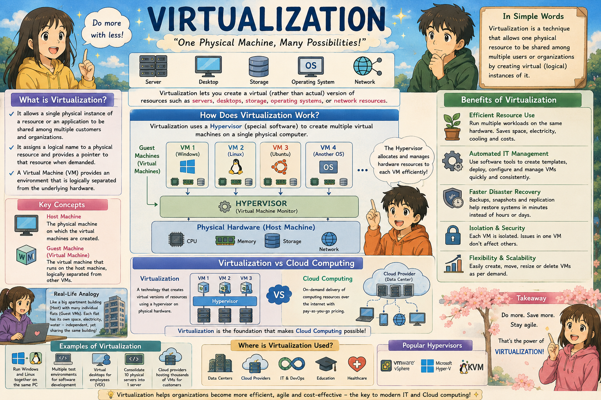
Complete taxonomy: Host hardware, hypervisor mediation, logical resource pooling, and multi-tenant guest OS containers.
The Hypervisor: Virtual Machine Manager
The foundational firmware or low-level software that coordinates virtual environments.
What is a Hypervisor?
A hypervisor (or Virtual Machine Monitor - VMM) is the virtualization software installed on a physical machine. It serves as an intermediary between guest VMs and underlying host hardware.
Coordinates physical CPU, memory, and I/O access so each VM receives its dedicated share without interference.
When a guest VM requests processing cycles, the hypervisor schedules the request on the physical CPU and returns the execution result.
A kernel crash or memory corruption in one guest VM cannot compromise or leak into another guest VM.
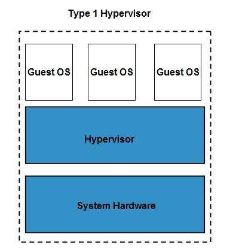
Hypervisor Classification: Type 1 vs. Type 2
Comparing bare-metal native hypervisors with hosted user-space virtualization layers.
Type 1: Bare-Metal (Native)
Direct HardwareRuns directly on the host computer's physical hardware without any underlying operating system. Acts as the OS itself.
Type 2: Hosted
Host OS DependentInstalled and executed as an application process on top of an existing host operating system (Windows, Linux, macOS).
Visualizing Type 1 vs Type 2 Architecture
Direct hardware execution stack versus hosted OS application stack.
Hypervisor Architecture: Type 1 (Bare-Metal) vs. Type 2 (Hosted)
Contrasting direct hardware execution against OS-mediated hypervisor abstraction layers.
Hypervisor Anatomy & Stacks
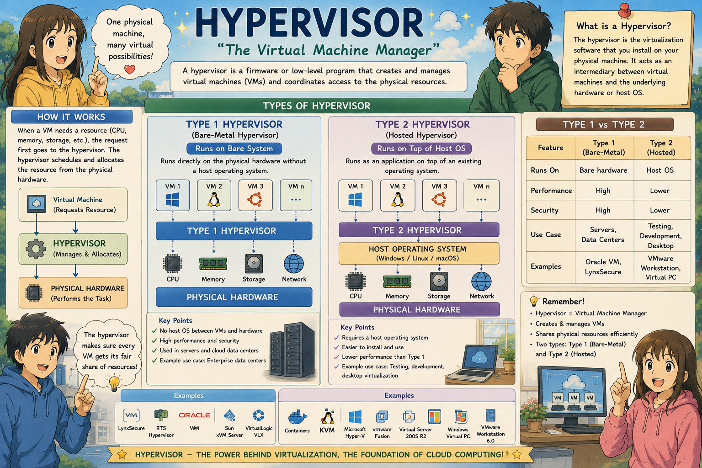
Structural breakdown: CPU hardware rings, I/O virtualization channels, virtual memory mapping, and device emulation.
Virtual Machines & Cloud Instances
Multi-tenant execution units running isolated guest environments on pooled physical hardware.
How Multiple VMs Run in Parallel
A Virtual Machine is an emulation of a complete computer system. Multiple VMs coexist safely on a single physical host, each operating with its own virtualized hardware footprint.
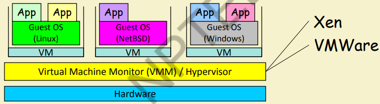
Key Architectural Advantages of VMs
Four engineering superpowers that revolutionize modern enterprise infrastructure.
Complete Process Isolation
Each virtual machine runs in an isolated bubble. Even if a guest OS suffers a catastrophic kernel panic or malware infection, neighboring VMs remain completely unaffected.
Live Migration & Mobility
VMs are fully encapsulated as disk files and memory state. Running virtual machines can migrate across physical servers over the network with zero observable downtime.
Hardware Independence
The hypervisor presents standard virtualized devices to the guest OS. You can move a VM from an Intel server to an AMD server without reinstalling drivers or the OS.
Instant Snapshots & Rollbacks
Administrators can freeze memory, disk, and CPU state in a fraction of a second before applying patches. If a software upgrade fails, a one-click rollback restores normal service.
VM Life Cycle & Live Migration
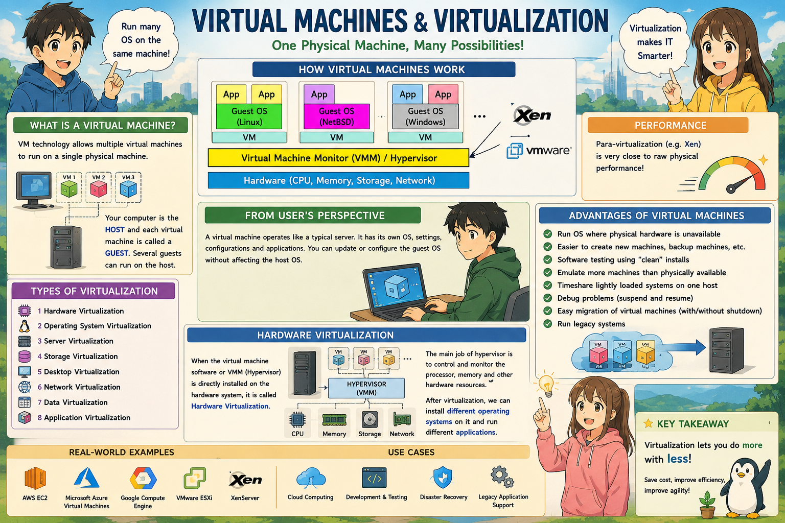
VM execution states: Provisioning, Running, Paused, Snapshotting, Live Pre-Copy Memory Migration, and Decommissioning.
The 8 Primary Types of Virtualization
Virtualization expands far beyond CPUs to cover every layer of enterprise technology.
Hardware Virtualization
Full, Para, and Emulation of physical server hardware via hypervisors.
OS-Level (Containers)
Shared OS kernel with user-space isolation via cgroups and namespaces.
Server Virtualization
Consolidates multiple server instances onto fewer physical mainframes.
Storage Virtualization
Pools physical HDDs/SSDs/SAN arrays into unified logical storage volumes.
Network (SDN / NFV)
Software switches, routers, and firewalls decoupled from physical wires.
Data Virtualization
Queries across heterogeneous databases without physically moving records.
Application Virtualization
Packages applications with dependencies to run without local installation.
Desktop Virtualization
Delivers centralized desktop environments to remote thin clients securely.
Hardware Virtualization: 3 Key Approaches
Comparing Full Virtualization, Hardware Emulation, and Para-Virtualization.
Full Virtualization
Completely simulates underlying hardware so unmodified guest OSes run unaware they are on a hypervisor.
Hardware Emulation
Simulates an entire computer architecture in software, translating foreign CPU instructions on-the-fly.
Para-Virtualization
Guest OS kernel is modified at compile time to cooperate directly with the hypervisor via hypercalls.
Hardware Virtualization Comparison Matrix
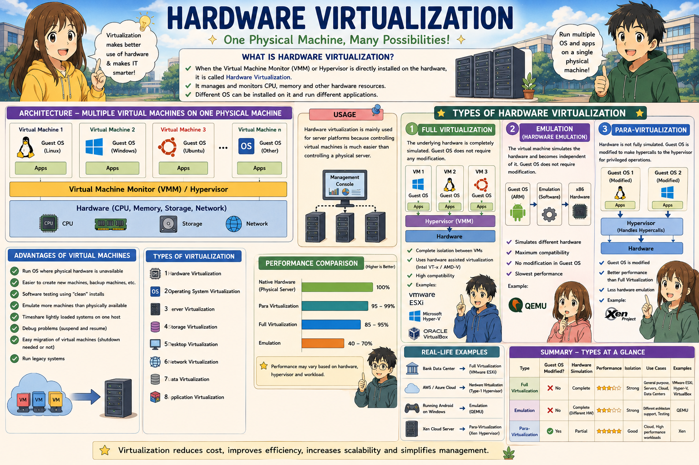
Comprehensive comparison: Instruction traps, hypercall execution, device emulation, and CPU performance benchmarks.
OS, Server & Storage Virtualization
Foundational data center abstractions: Containers, physical consolidation, and storage fabrics.
OS-Level (Containers)
Runs multiple isolated user spaces (containers) on a single shared host OS kernel.
Server Virtualization
Partitions single physical enterprise servers into dozens of virtual server instances.
Storage Virtualization
Combines physical HDDs, SSDs, and SAN arrays into unified logical storage pools.
Network, Data & Application Virtualization
Abstracting connectivity, distributed data repositories, and client runtimes.
Network Virtualization
Combines physical switches, routers, and firewalls into software-defined networks.
Data Virtualization
Creates an abstraction layer between heterogeneous data sources and consuming applications.
Application Virtualization
Encapsulates applications with their registry keys and DLLs to execute without local OS install.
Complete Types of Virtualization Poster
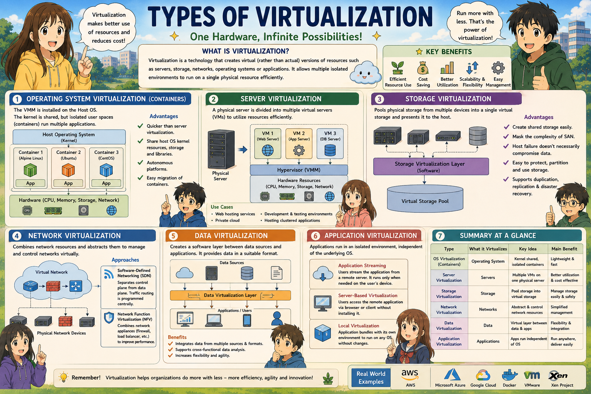
Comprehensive poster: OS Virtualization (Containers), Server, Storage, Network (SDN/NFV), Data, and App streaming.
Xen Hypervisor: Microkernel & Domains
Developed at Cambridge University, Xen separates virtualization policy from mechanism.
Xen Architecture Breakdown
Xen is an open-source, bare-metal Type-1 microkernel hypervisor. Not all guest OSes are created equal—Xen introduces a privileged control domain (Dom0) and unprivileged guest domains (DomU):
The first domain launched on boot. Possesses direct hardware access, coordinates guest VMs, runs management daemons (XenD and XenStore), and hosts Backend Drivers for I/O multiplexing.
Regular guest VMs with zero direct hardware access. Execute using lightweight Frontend Drivers (Virtual Disks & NICs) that communicate with Dom0 over XenBus.
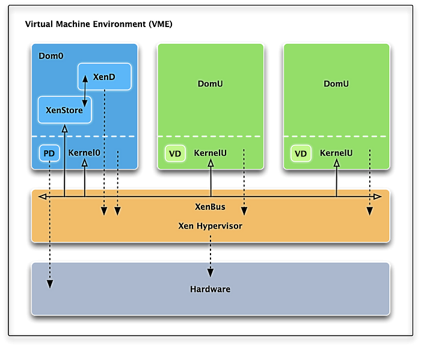
KVM: Kernel-Based Virtual Machine
Turning the Linux kernel into a full bare-metal hypervisor via loadable kernel modules.
How KVM Operates in Linux
Integrated into mainline Linux since 2.6.20. Rather than replacing the OS kernel with a microkernel, KVM loads kernel modules (kvm.ko, kvm-intel.ko) to convert Linux into a hypervisor.
Each guest VM is simply a standard Linux process (qemu-kvm). The standard Linux scheduler (CFS) prioritizes and schedules VM threads across CPU cores.
Relies on Intel VT-x and AMD-V extensions. The kernel character device /dev/kvm enables QEMU to execute guest instructions directly on physical silicon.
High-performance paravirtualized network and storage drivers bypass slow hardware emulation for fast ring buffer data transfers.
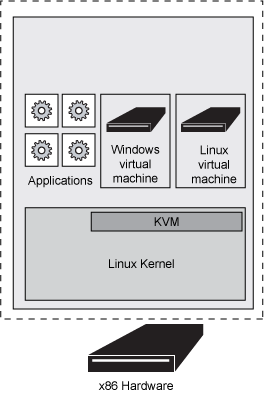
Xen Microkernel vs KVM Monolithic Linux
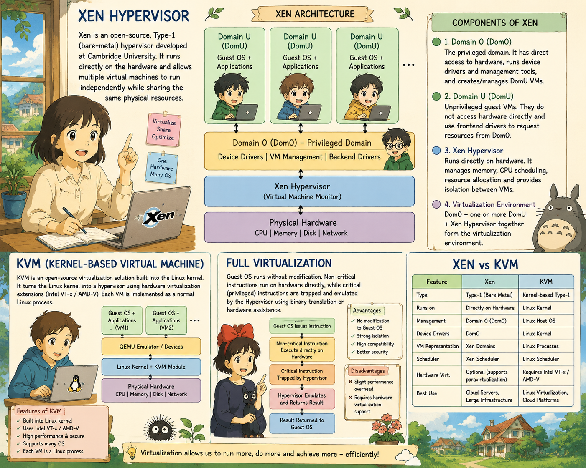
Architectural divergence: Dedicated microkernel with Dom0 policy separation (Xen) vs loadable Linux kernel modules with native scheduler (KVM).
Binary Translation: Trap-and-Emulate
Solving the x86 virtualization hole through dynamic runtime instruction rewriting.
The Popek-Goldberg Virtualization Hole
According to the Popek-Goldberg theorem, a CPU architecture is strictly virtualizable if and only if all sensitive instructions are a subset of privileged instructions.
Early x86 processors contained 17 sensitive unprivileged instructions (e.g. POPF, PUSHF, SGDT). When executed in Ring 1, they failed silently without trapping into Ring 0!
The VMM scans guest kernel code at runtime. Safe instructions execute directly on hardware; sensitive instructions are intercepted and replaced with safe emulation routines.
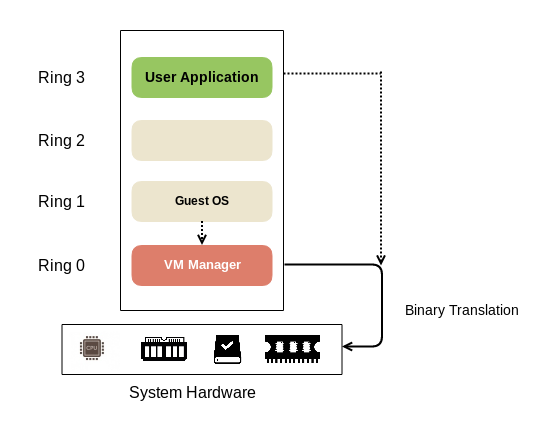
x86 Privilege Rings & The Virtualization Hole
From Ring 0 trap limitations to Intel VT-x / AMD-V Root vs Non-Root operation.
CPU Privilege Architecture: x86 Ring Compression vs. Intel VT-x Dual-Mode
How the Popek-Goldberg virtualization condition violation was solved by modern hardware-assisted virtualization.
Code Cache Mechanics & Translation Overhead
How dynamic translation amortizes performance penalties over repeated execution loops.
The Translation Cache Loop
Translating instructions byte-by-byte in software is expensive. To achieve high performance, binary translation employs an in-memory Code Cache:
Performance Trade-offs
Binary translation strikes a crucial engineering balance between complete guest compatibility and runtime CPU execution speed:
Binary Translation Dynamic Engine Poster
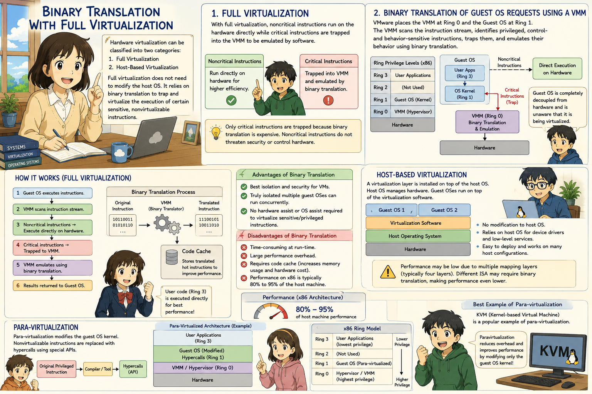
Comprehensive flow: Basic block parsing, sensitive instruction replacement, code cache hit/miss arbitration, and hardware assist.
Para-Virtualization with Compiler Support
Replacing privileged instruction traps with dedicated software hypercalls at compile time.
How Para-Virtualization Operates
Unlike full virtualization which intercepts sensitive instructions at runtime, para-virtualization modifies the guest OS source code during compilation:
Privileged instructions (e.g. page table updates, interrupt toggling) are replaced with explicit hypercalls. Just as user apps use system calls to request OS services, the guest OS uses hypercalls to request hypervisor services.
The modified guest OS runs cleanly at Ring 1, while the hypervisor owns Ring 0. Because sensitive instructions were replaced at compile time, no silent failures occur!
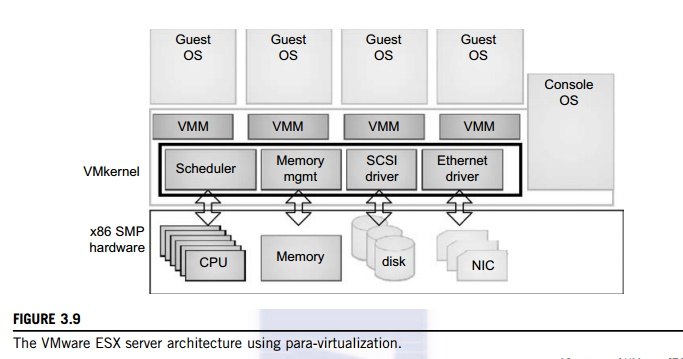
Full Virtualization vs. Para-Virtualization
Contrasting binary translation trap-and-emulate with direct compile-time hypercalls.
Virtualization Execution Models: Binary Translation vs. Para-Virtualization
Comparing dynamic run-time instruction translation against compile-time hypercall adaptation.
VMware ESX Server & Host-Based Virtualization
Enterprise bare-metal VMkernel architecture and host-based virtualization layers.
VMware ESX Server Architecture
VMware ESX Server is a monolithic Type-1 bare-metal hypervisor powered by the custom VMkernel, which owns all physical memory, CPU cores, and hardware devices.
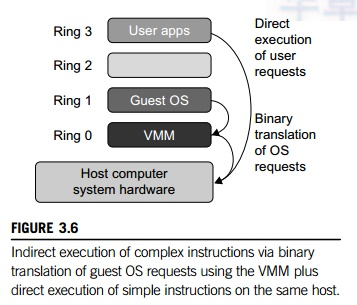
Para-Virtualization Stack Poster
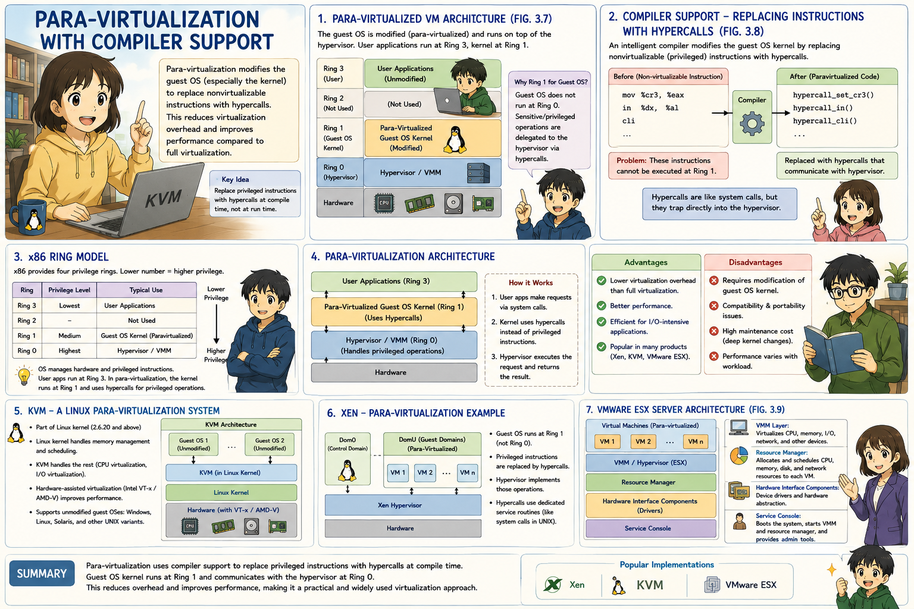
Comprehensive stack: Ring 0 hypervisor, Ring 1 hypercall dispatchers, split frontend/backend drivers, and event channels.
The 5 Implementation Levels of Virtualization
Virtualization can be applied at five distinct architectural boundaries in a computing stack.
Instruction Set (ISA)
Emulates foreign CPU in software. Max portability; slowest speed.
Hardware Layer (HAL)
Virtualizes x86 hardware resources for complete guest OSes.
Operating System
Shared OS kernel with isolated user-space containers.
User Library (API)
Hooks and translates system APIs for foreign binaries.
Application (Process VM)
Executes bytecode inside runtime process sandboxes.
Taxonomy: The 5 Implementation Levels of Virtualization
From Instruction Set Architecture (ISA) emulation up to Application-level Virtual Machines.
Levels 1 & 2: ISA and Hardware Abstraction (HAL)
Low-level execution abstraction at machine code and motherboard boundaries.
Level 1: Instruction Set Architecture (ISA)
CPU EmulationEmulates a complete foreign instruction set architecture in software. Allows binaries compiled for CPU A (e.g. ARM) to execute on CPU B (e.g. x86).
- • Portability: Highest portability; runs any binary regardless of CPU.
- • Performance: Lowest execution speed due to instruction-by-instruction translation overhead.
- • Examples: QEMU, Bochs, Apple Rosetta
Level 2: Hardware Abstraction Layer (HAL)
Hypervisor CoreVirtualizes the physical hardware platform directly below the operating system. Hypervisor provisions virtual motherboards, vCPUs, and vNICs.
- • Performance: Near-native performance using CPU hardware extensions (Intel VT-x/AMD-V).
- • Cloud Standard: Powers 95%+ of all enterprise cloud infrastructure.
- • Examples: VMware ESXi, Linux KVM, Xen Hypervisor
Levels 3, 4 & 5: OS, Library & Application Levels
From shared-kernel container engines up to process runtime bytecode sandboxes.
OS-Level Virtualization
Creates isolated virtual environments on a single shared host OS kernel using cgroups and namespaces.
Library-Level (API)
Intercepts API calls from applications and translates them dynamically into the host operating system's native ABI.
Application-Level (VM)
Virtualizes an execution engine for an individual application process running intermediate bytecode.
The 5 Implementation Levels Architectural Stack
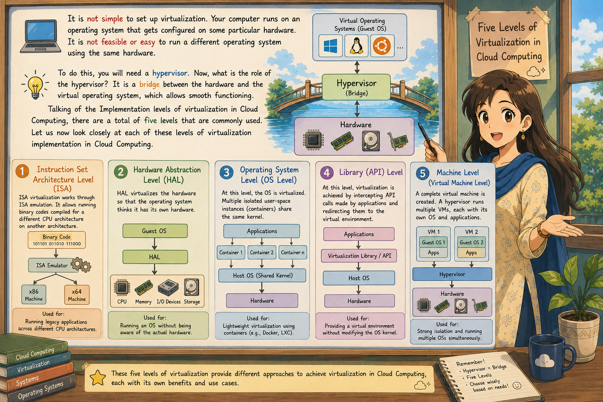
Complete vertical taxonomy: Hardware ISA, Hypervisor HAL, OS Containers, User API interception, and Application Process runtimes.
The 6 Cloud Computing Architectural Principles
Essential engineering tenets governing mission-critical public cloud design.
Reasonable Deployment
Match workloads to bare-metal, virtual instances, or serverless runtimes appropriately.
Business Continuity
High availability, continuous operations, and automated disaster recovery failover.
Elastic Expansion
Decouple components to dynamically scale in and out based on real-time traffic spikes.
Performance Efficiency
Continuous benchmarking, resource sizing, and network latency optimization.
Security & Compliance
Zero-trust architecture, encryption at rest/in-transit, and regulatory compliance (RBI, GDPR).
Operational Excellence
Automated telemetry, continuous CI/CD delivery, and proactive runbook automation.
Principles 1 to 3: Deployment, Continuity & Elasticity
Core deployment and resilience engineering in enterprise cloud environments.
1. Reasonable Deployment
Categorizes workloads between hosted applications, multi-tenant VMs, and high-performance physical bare-metal cloud hosts.
2. Business Continuity
Combines high availability (Multi-AZ), continuous operations (zero-downtime updates), and disaster recovery (cross-region replication).
3. Elastic Expansion
Tightly coupled systems are impossible to scale. Cloud systems must decouple state from compute via queues and caches for auto-scaling.
Principles 4 to 6: Performance, Security & Operations
Operational discipline, zero-trust protection, and resource optimization.
4. Performance Efficiency
Analyze application resource bottlenecks, benchmark IOPS, leverage serverless caching, and eliminate wasteful compute cycles.
5. Security & Compliance
Address business security protection and regulatory supervision (PCI-DSS, RBI compliance) through pervasive encryption and IAM.
6. Operational Excellence
Treat operational procedures as software code. Automate system telemetry, anomaly detection, incident response, and continuous delivery.
High-Performance Computing (HPC) Clusters
Aggregating processing power to deliver orders-of-magnitude higher performance than standard servers.
The HPC Cluster Architecture
HPC is the practice of aggregating computing power across thousands of interconnected nodes to solve massive computational problems in science, engineering, and finance:
Key HPC Metrics
Utility & Enterprise Grid Computing
Federating heterogeneous computing resources across independent administrative domains.
Grid vs Utility Computing
Grid Computing federates geographically dispersed, heterogeneous servers into a unified cluster to solve monumental tasks. Utility Computing packages those resources as a metered service (like water or electricity).
Connected parallel nodes form clusters of varying sizes running diverse operating systems, managed by centralized grid middleware.
Enterprises harness idle desktop PCs and servers overnight to process financial risk simulations or genetic sequencing workloads.
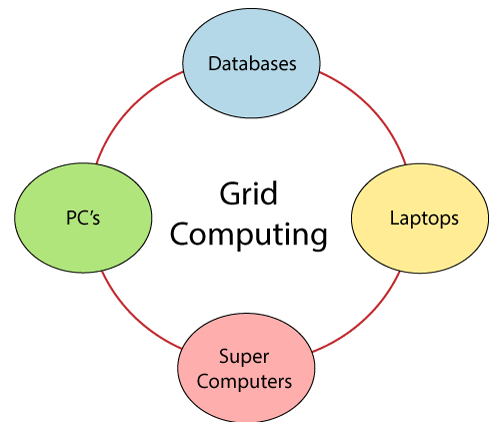
Data Grid Task Coordination & Manager Node
How specialized grid middleware distributes tasks, balances loads, and aggregates results.
How Grid Software Works
Grid computing functions by running specialized management software on every participant computer across the data grid. The software coordinates tasks across 3 primary roles:
Acts as the central coordinator. Slices massive jobs into subtasks, monitors participant health, and allocates workloads based on idle capacity.
Heterogeneous computers contributing CPU cycles. Execute tasks in the background and stream partial results back to the control node.
Applications submitting high-throughput computing jobs to the grid interface.
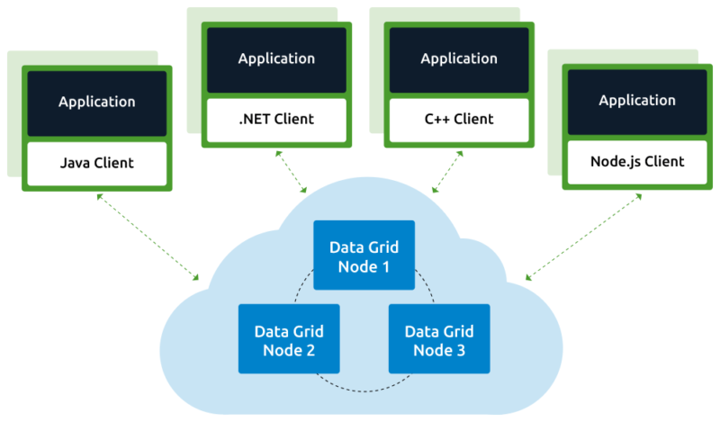
10 Strategic Cloud Benefits (Part 1: Agility & Scale)
Transforming IT from a slow capital expenditure into an agile operational engine.
Instant Elasticity
Scale compute from 10 to 10,000 servers in minutes to absorb sudden viral demand.
Global Reach
Deploy applications across dozens of worldwide regions with single-digit millisecond latency.
CapEx to OpEx
Eliminate upfront server purchasing; trade heavy fixed costs for variable pay-as-you-go costs.
Developer Velocity
Engineers spin up sandboxes and databases via self-service APIs without waiting months for IT.
Automated Backups
Continuous point-in-time snapshots and cross-region replication with 99.999999999% durability.
10 Strategic Cloud Benefits (Part 2: Economics & Reliability)
Cost efficiency, continuous compliance, and enterprise resilience.
Economies of Scale
Hyperscalers (AWS, Azure) purchase hardware at massive discounts and pass cost savings to users.
High Availability
Applications run across isolated Availability Zones with independent power and flood plains.
Zero Maintenance
Cloud providers manage physical data center repairs, HVAC, cabling, and hypervisor patches.
Enterprise Security
Dedicated hardware security modules (HSMs), fine-grained IAM policies, and continuous DDoS defense.
Sustainable Energy
Cloud data centers operate at industry-leading PUE ratings powered predominantly by renewable power.
AWS Nitro System: Offloading Hypervisor Overhead
Offloading storage, networking, security, and monitoring to dedicated hardware ASIC cards.
Traditional Virtualization Tax
In legacy hypervisors, 15–30% of physical CPU cores and RAM are consumed by the hypervisor managing networking, storage I/O, security filtering, and telemetry.
The AWS Nitro Revolution
AWS redesigned the server architecture with dedicated PCIe cards (Nitro Cards). Nearly 100% of host CPU and memory is delivered directly to customer EC2 instances:
Lab: Hosting a Web Server on AWS EC2
Step-by-Step EC2 Deployment Walkthrough
-
1
Console Login & Region: Log in to AWS Management Console. Select target region (e.g.
eu-west-1). -
2
Launch Instance: Select Amazon Linux 2 / Ubuntu AMI. Choose Free Tier eligible
t2.micro(1 vCPU, 1 GiB RAM). -
3
Security Group Configuration: Open Port 22 (SSH) for admin access and Port 80 (HTTP) to
0.0.0.0/0for public web traffic. -
4
Deploy Apache Web Server: SSH into instance and run:
yum install httpd -y && systemctl start httpd && systemctl enable httpd
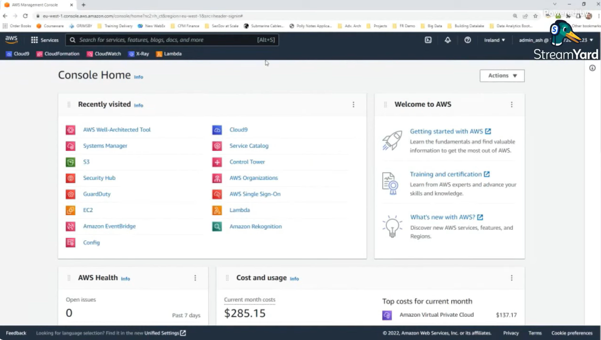
Unit 2 Master Review & Key Formulae
High-yield architectural formulas, definitions, and comparison principles for technical evaluations.
Hypervisors & Xen
Type 1 runs bare-metal (ESXi, Xen). Type 2 runs as an app on host OS (VirtualBox).
Dom0 has direct HW access & backend drivers. DomU guest VMs run isolated frontend drivers.
Uses Linux kernel character device /dev/kvm and QEMU userspace.
Execution & Levels
Traps sensitive instructions and rewrites them into code cache (Popek-Goldberg fix).
Compiler replaces sensitive instructions with explicit hypercalls to hypervisor.
Level 1 (ISA) → Level 2 (HAL) → Level 3 (OS) → Level 4 (Library) → Level 5 (JVM App).
Principles & Grid
Deployment, Business Continuity, Elastic Expansion, Performance, Security, Operations.
Control Node (manager), Provider Nodes (compute workers), User Nodes (clients).
Dedicated ASIC PCIe cards offload VPC networking, EBS storage, and hypervisor duties.